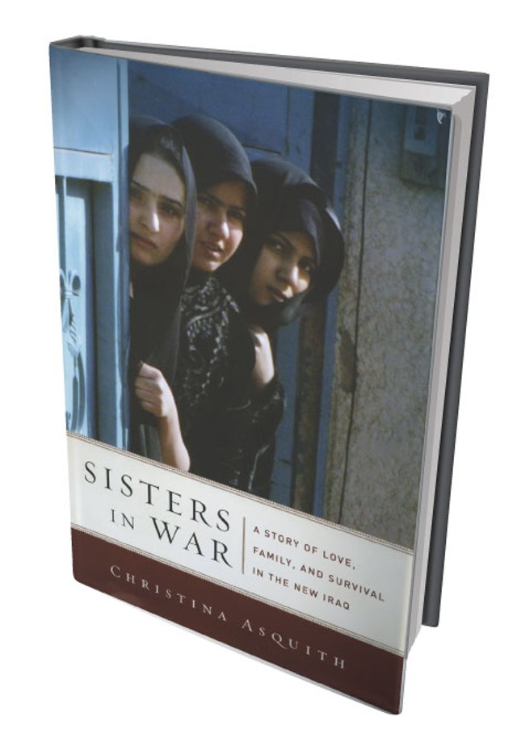

I wrote The Emergency Teacher in 2000 as an investigative account and memoir of my first year as an untrained 6th grade teacher in a failing public school.
Teachers review The Emergency Teacher here in Good Reads. In 2009, I published "Sisters in War" about years reporting from Baghdad, Iraq during the US invasion. Financial Times review said it was a “A rare, beautifully written insight into the haunting ways in which women have been affected by the conflict.”
83% of readers gave it 4-5 stars here on Amazon.